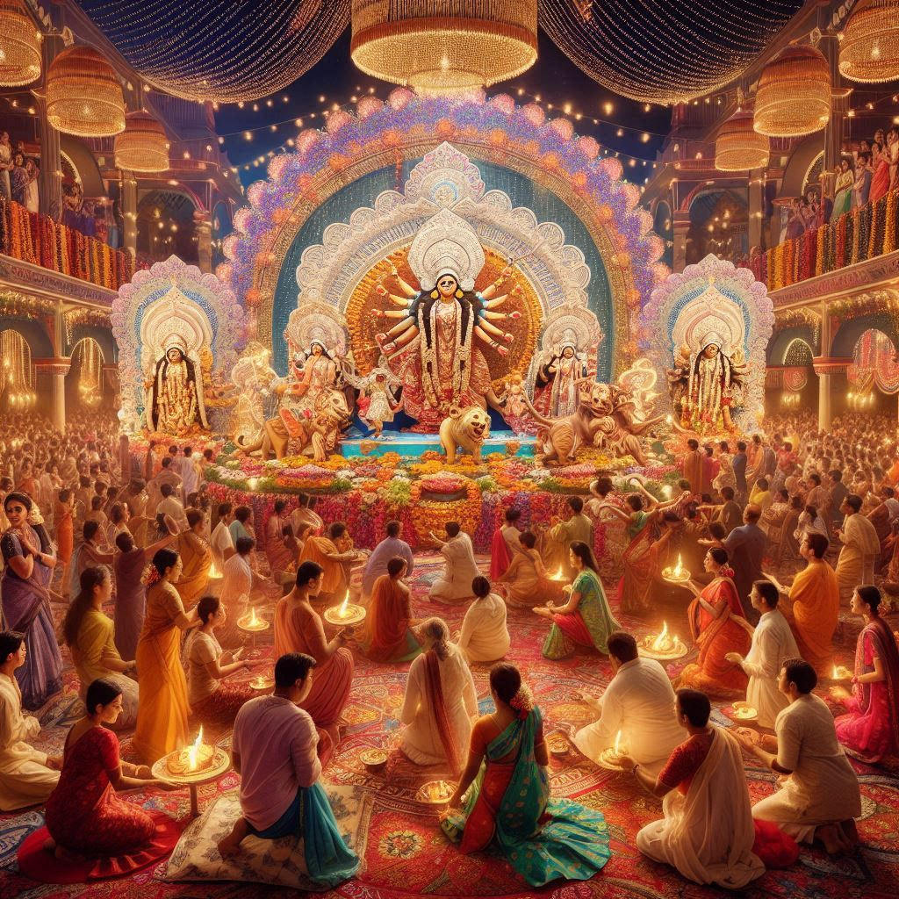
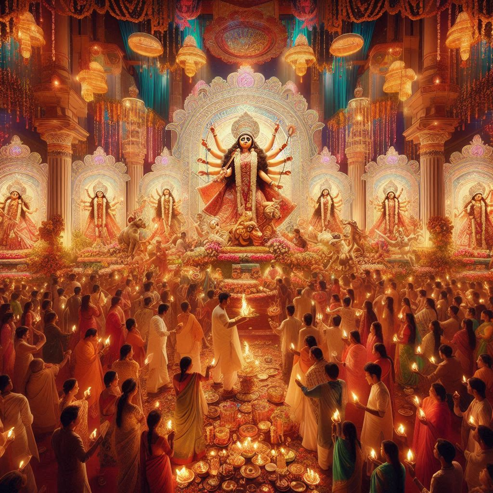

West Bengal is home to a vibrant and diverse range of festivals, reflecting its rich cultural traditions, religious practices, and historical significance. Some of the most celebrated festivals in West Bengal include:
1. Durga Puja
- Significance: Durga Puja is the most prominent and grand festival in West Bengal, celebrating the victory of Goddess Durga over the buffalo demon Mahishasura. It symbolizes the triumph of good over evil.
- Celebration: The festival lasts for five days and is marked by grand processions, elaborate rituals, cultural performances, and the immersion of Durga idols in rivers. Homes, temples, and streets are beautifully decorated, and special feasts are prepared. It's a time for families to come together and celebrate.
- Time: September or October (dates vary based on the lunar calendar).
2. Kali Puja
- Significance: Kali Puja is dedicated to Goddess Kali, the destroyer of evil forces and the protector of the universe.
- Celebration: The night of Kali Puja is marked by grand rituals, especially in Kolkata. Devotees offer prayers, light oil lamps, and perform fire rituals. It's a time for people to seek protection and blessings from the powerful goddess.
- Time: October or November (around the same time as Diwali).
3. Poila Boishakh (Bengali New Year)
- Significance: Poila Boishakh marks the first day of the Bengali calendar, a day for new beginnings and to celebrate the harvest season.
- Celebration: The day is celebrated with family gatherings, new clothes, traditional Bengali food, and cultural programs. Many businesses also open new accounts on this day, as it marks the start of a new financial year.
- Time: April (1st day of the Bengali month of Baishakh).


4. Saraswati Puja
- Significance: Saraswati Puja is dedicated to Goddess Saraswati, the goddess of knowledge, music, and arts.
- Celebration: Students, teachers, and artists worship the goddess on this day, seeking blessings for wisdom and creativity. Schools and colleges hold special prayers, and idols of Saraswati are installed in homes and public spaces.
- Time: January or February (on Vasant Panchami).
5. Baisakhi (Vaisakhi)
- Significance: Baisakhi is celebrated to mark the harvest season and is also significant for Sikhs as it commemorates the formation of the Khalsa in 1699.
- Celebration: In West Bengal, the festival is observed with cultural performances, fairs, and special prayers. Farmers celebrate the harvest with enthusiasm, and people often participate in traditional dances like Bhangra and Gidda.
- Time: April 13th or 14th.
6. Rath Yatra
- Significance: The Rath Yatra is a festival dedicated to Lord Jagannath, where idols of the gods are carried in grand chariots.
- Celebration: The Rath Yatra is one of the most significant festivals in Kolkata. The grand procession of the chariots, which travel through the city streets, is accompanied by devotees singing and dancing. The chariot procession signifies the journey of Lord Jagannath to his aunt's house.
- Time: June or July (dates vary).
7. Eid ul-Fitr
- Significance: Eid ul-Fitr marks the end of Ramadan, the holy month of fasting for Muslims.
- Celebration: The festival is celebrated with prayers at mosques, followed by feasts with family and friends. The celebration includes giving charity (Zakat) and exchanging gifts, with special delicacies like mutton biryani and sheer khurma.
- Time: Varies based on the Islamic lunar calendar.
8. Christmas
- Significance: Christmas marks the birth of Jesus Christ, celebrated by Christians across West Bengal.
- Celebration: Churches hold midnight Mass, and homes are decorated with Christmas trees, lights, and nativity scenes. People exchange gifts, and the festival is marked by a sense of joy, peace, and giving.
- Time: December 25th.
9. Mahashivaratri
- Significance: This is a day dedicated to Lord Shiva, observed by fasting, night vigils, and prayers.
- Celebration: Devotees gather at temples and offer prayers to Lord Shiva, performing rituals like chanting mantras and offering milk and water to the Shiva lingam. The festival is celebrated with great devotion and enthusiasm.
- Time: February or March.
These festivals bring people together, promote cultural exchange, and highlight the diverse traditions of West Bengal. They are not just religious observances but are also a reflection of the state's rich artistic, cultural, and culinary heritage.